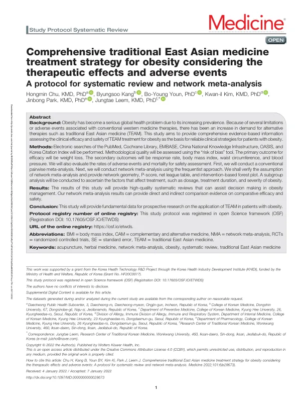

Comprehensive traditional East Asian medicine treatment strategy for obesity considering the therapeutic effects and adverse events: A protocol for systematic review and network meta-analysis
Chu H, Kang B, Youn BY, Kim Ki, Park J, Leem J
Medicine 101(6):e28673

첫 장 · 오픈액세스First page · open access
논문 소개Summary
비만은 유병률이 계속 올라 세계적인 건강 문제가 되었습니다. 기존 양약 치료에는 제한이나 이상반응이 따르는 경우가 있어 대안을 찾는 수요가 늘었습니다. 동아시아 전통의학은 한약, 침, 뜸, 기공, 생활습관 교정 등 여러 방법을 함께 씁니다. 그런데 이들 사이에 무엇이 무엇보다 나은지를 직접 비교한 연구는 드뭅니다. 임상에서 무엇을 먼저 권할지 정하려면 그 비교가 필요합니다.
이 논문은 그 비교를 하기 위한 체계적 문헌고찰과 네트워크 메타분석의 연구계획서입니다. PubMed, Cochrane Library, EMBASE, CNKI, OASIS, 한국학술지인용색인을 검색하기로 했습니다. 주 지표는 체중 감소이고, 부 지표는 반응률, 체질량지수, 허리둘레, 혈압입니다. 안전성은 이상반응과 사망 발생률로 봅니다. 먼저 통상적인 짝지은 메타분석을 하고, 이어 빈도주의 방식의 네트워크 메타분석으로 직접 비교와 간접 비교를 함께 제시하기로 했습니다. 네트워크 기하구조, P-score, 리그 표를 내고 용량, 치료 기간, 비만 정도에 따른 하위군 분석도 계획했습니다.
계획서이므로 결과는 없습니다. 네트워크 메타분석은 치료법 사이에 직접 비교가 없어도 공통 대조군을 다리 삼아 순위를 매길 수 있는 방법인데, 그만큼 가정이 지켜졌는지 확인하는 절차를 미리 정해 두어야 합니다. 연구계획은 Open Science Framework에 등록했습니다.
Obesity has become a global health problem as its prevalence continues to rise. Conventional pharmacological treatment carries restrictions or adverse events for some patients, increasing demand for alternatives. East Asian traditional medicine draws on herbal medicine, acupuncture, moxibustion, qigong and lifestyle modification together, yet direct comparisons among them are scarce. Deciding what to offer first in practice requires that comparison.
This paper is the protocol for a systematic review and network meta-analysis designed to make it. PubMed, the Cochrane Library, EMBASE, CNKI, OASIS and the Korea Citation Index were to be searched. The primary efficacy outcome was weight loss, with response rate, body mass index, waist circumference and blood pressure as secondary outcomes, and rates of adverse events and mortality for safety. A conventional pairwise meta-analysis would come first, followed by a frequentist network meta-analysis presenting direct and indirect comparisons, with network geometry, P-scores and a net league table, plus subgroup analyses by dose, treatment duration and severity of obesity.
Being a protocol, it reports no findings. Network meta-analysis can rank treatments that have never been compared head to head by using a common comparator as a bridge, which is exactly why the checks on its assumptions must be specified in advance. The protocol was registered with the Open Science Framework.
인용Cite
Chu H, Kang B, Youn BY, Kim Ki, Park J, Leem J. Comprehensive traditional East Asian medicine treatment strategy for obesity considering the therapeutic effects and adverse events: A protocol for systematic review and network meta-analysis. Medicine. 2022;101(6):e28673. doi:10.1097/MD.0000000000028673